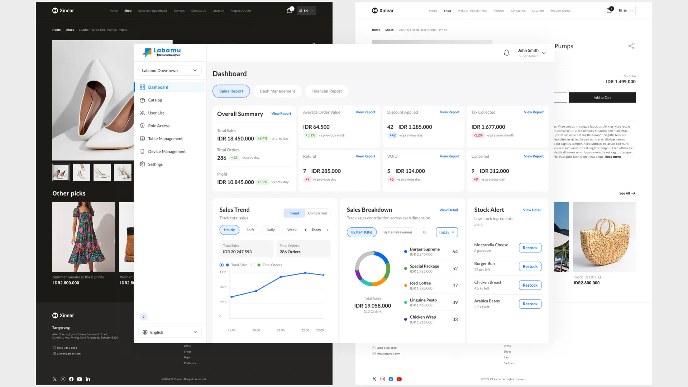

Labamu - Dashboard & Ecommerce

Overview
Labamu is a digital platform designed to help SMEs manage their business operations more efficiently, covering transaction management, financial tracking, and business performance monitoring. The platform aims to simplify operational workflows for merchants through an integrated ecosystem that supports both online and offline business activities. In this project, I focused on two connected modules:
Merchant Back Office Dashboard: a centralized admin panel that allows merchants to manage their business operations, including analytics & reporting, user and role management, POS table layout configuration, device management, and other operational settings
Merchant Ecommerce Web Profile: a customer-facing ecommerce module that enables merchants to showcase their business online and sell products directly to customers
Problem & Challenge
Dashboard Challenge
The existing dashboard experience was fragmented across multiple systems and lacked a centralized structure. The redesign aimed to create a unified merchant back office that felt more practical, compact, and efficient for daily operations.
Another major challenge was the previous handoff workflow between design and development teams. The old process relied mostly on static Figma screens without interactive prototypes, which often caused misunderstandings regarding user flows, edge cases, and component behaviors during implementation.
Ecommerce Challenge
The ecommerce module already supported multiple theme templates and color variations, but the existing design system lacked scalability and consistency. Component styling and color structures were difficult to maintain and not fully aligned with the development architecture.
Solution
To address the dashboard issues, I focused on:
Improve the workflow using AI-assisted prototyping. Since this was a completely new workflow approach for the team, we invested significant time in discussions and research to define the best practices for both the product workflow and the dashboard modules being developed. We explored how modern product teams utilize AI within design and development processes, studied different experimentation approaches, and evaluated how AI could realistically improve collaboration efficiency. To support this initiative, we also formed a dedicated squad specifically focused on testing and validating the AI-assisted workflow.
Creating a more scalable information and navigation structure
Simplifying the previous UI patterns into a more compact and practical experience
Introducing AI-assisted interactive prototypes to improve flow validation and handoff clarity
For the ecommerce module, the solutions included:
Restructuring the design system using variables for colors and components
Simplifying the theme color architecture
Ensuring all screens and components consistently used the new style variables
Providing complete examples for each template and color theme combination to support implementation consistency
Result & Impact
The AI-assisted prototyping workflow significantly improved collaboration across teams:
Product, design, and stakeholders could validate flows more easily before development
Developers and QA teams gained a clearer understanding of user journeys, edge cases, and interaction behaviors
The prototypes also became useful implementation references that developers could directly consume during development
The redesigned design system created a more scalable and maintainable structure:
Theme management became easier for developers to implement and maintain
UI consistency improved across templates and color variations
The final implementation aligned more accurately with the design specifications
Conclusion
This project taught me how AI can be effectively utilized as a practical design tool rather than just a supporting feature. By integrating AI into the prototyping workflow, I discovered how significantly it could improve both production speed and communication quality across teams. At the same time, I also learned that achieving better AI-generated results requires well-structured prompts and clearer instructions. Moving forward, I want to continue exploring more efficient prompting methods to optimize both token usage and output quality while maintaining strong design thinking and product understanding.